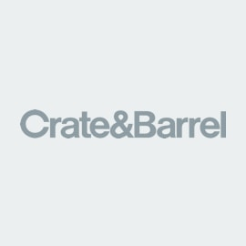

Kesley Zahn + Kurt Cunningham are happy to announce their marriage on October 6, 2017.
After a decade in the making it's finally happening and we couldn't be more excited! We can't wait to celebrate our big day with all of you. Please find neccassary information for the events and locations below. We will be updating our site regularly so check back now and then or just reach out if you need us. #officiallykcunni
-
Hotel Booking
- Tuesday, Sept. 5th
- Sheraton
- By End of Day
-
Welcome Dinner
- Thursday, Oct. 5th
- Emerson's Ale House
- 8:00 p.m. - 12:00 a.m.
-
Wedding
- Friday, Oct. 6th
- Pinstripes
- 4:30 p.m. - 5:00 p.m.
-
Wedding Cocktail Hour
- Friday, Oct. 6th
- Pinstripes
- 5:00 p.m. - 6:15 p.m.
-
Wedding Reception + Dinner
- Friday, Oct. 6th
- Pinstripes
- 6:15 p.m. - 11:00 p.m.
-
Wedding After Party
- Friday, Oct. 6th
- Pinstripes
- 11:00 p.m. - 1:00 a.m.
-
Emerson's Ale House
- 113 S Emerson St, Mt Prospect, IL 60056
- (847) 870-1996 | Directions
-
Pinestripes (Wedding Venue)
- 1150 Willow Rd, Northbrook, IL 60062
- (847) 480-2323 | Directions
-
Sheraton (Wedding Hotel)
- 1110 Willow Rd, Northbrook, IL 60062
- (847) 480-1900 | Directions | Book by Sept. 5
Just how did a girl from the suburbs of Chicago and a boy from the cornfields of Iowa find each other? It didn't take much effort, really. It just took one rainy day, several college campus visits and the Old Capital at the University of Iowa to put them in the same state. Read the story of how they met and fell in love in their own words.
The Bride
Finding a college wasn’t easy for me. My family was frustrated because I didn’t like any of the schools I visited and it was coming down to crunch time. I was incredibly nervous that my name wasn’t going to be featured on the college map in my high school newspaper.
In April of 2006 I decided to visit the University of Iowa on a whim. I didn’t think I could possibly love a school in the middle of a cornfield. That changed when we drove up to the beautiful Iowa campus. Despite the pouring rain and completely overcast skies, I said, “This feels like home. I’m going here.” I think my dad did a little dance in his head when I said that.
Freshman year of college was one of the best years of my life. I joined a sorority and loved my major – Journalism. I didn’t think things could possibly get any better until I found out my favorite band, Jack’s Mannequin, was playing a show on campus. In order to attend the show you had to do 10 hours of community service.
During this time period I met a cute boy who lived in my dorm room and had the same journalism classes as me. He happened to love Jack’s Mannequin and wanted to do the community service with me. Perfect! His name was Kurt. Kurt was always “borrowing” my homework (even though I would later come to find out he had already done the homework and just wanted an excuse to talk to me) and teasing me for reading my favorite magazine “Us Weekly.” He also wore black Converse sneakers. Definitely my type!
We kicked off the community service at an elementary school in Iowa City. Kurt was so great with the kids, which made me like him even more. After about a month of me playing hard to get and Kurt dubbing me - “pretty girl”, we started dating. From summers in Iowa to starting a life together in Chicago, the past 10 years have been the best years of my life.
We are FINALLY getting married and I couldn’t be more excited to make it official! Choosing Iowa was hands down THE best decisions of my life because it led me to my Kurt.
The Groom
As a boy growing up in Iowa I knew of only one school I would attend upon high school graduation. It's the only school worth attending in Iowa - no I'm not joking friends from Iowa State. In fact, I wanted to go so bad I didn't even apply to another school and my mom had to drag me to an on-campus visit to confirm what I had already explained to her.
It wasn't until the spring of my freshman year that I met Kesley for the first time. I remember seeing her in my dorm room hallway one random night and thought, "She's pretty good looking". I asked a mutual friend who she was and what I needed to know about her. One fact stood out. She liked the band Jack's Mannequin.
It just so happened that that spring an on-campus organization, 10,000 Hours, was sponsoring a free concert for students who completed 10 hours of community service. The featured band: Jack's Mannequin. It didn't take much effort to convince Kesley to volunteer with me.
I'm not sure what it was about those 10 hours of communinty service, but some how that kick started our amazing 10 year relationship. I'm truly lucky to have found Kesley and can't be more excited to marry her.
-
West Elm
- 
Crate & Barrel
-
Bed Bath And Beyond